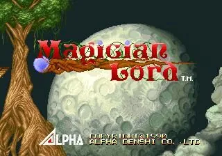

Neo Geo · Nº 52
Magician Lord
- Año: 1990
- Desarrollador: Alpha Denshi Co.
- Género: Plataformas / Disparos con desplazamiento
- Jugadores: 2 jugadores
Magician Lord es un shoot 'em up de plataformas de desplazamiento lateral en el que el jugador encarna a un mago llamado Elta, el último Magician Lord, en su misión para salvar su tierra del malvado Gul-Agieze, que planea resucitar al Dios de la Destrucción con 8 tomos de poder místico.
Elta tiene que saltar, disparar y trepar hasta el final de cada uno de los 8 niveles, donde debe vencer a un siervo de Gal y a una de sus siniestras criaturas jefe. Para completar el juego debe llegar a la fase final y derrotar al propio Az Atorse. Si se tarda demasiado en completar una fase, a Elta le acosa un monstruo invencible.
El ataque principal de Elta es un proyectil de energía débil pero rápido que puede lanzar en cuatro direcciones, pero recogiendo los orbes de colores que aparecen de vez en cuando puede transformarse en otras formas, más poderosas y con ataques nuevos.
Estas son las seis formas que puede adoptar Elta recogiendo los orbes de colores:
* Guerrero Dragón: ataca echando fuego por la boca, un ataque continuo de corto alcance que, a diferencia del normal, también se puede dirigir en diagonal.
* Hombre de Agua: ataca con granadas de agua, burbujas azules que revientan al tocar el suelo y forman columnas de agua. Pueden golpear varias veces para hacer más daño, pero solo cubren una zona pequeña.
* Poseidón: una versión más poderosa del Hombre de Agua; lanza olas anchas que recorren el suelo y golpean varias veces. Hacen mucho daño y congelan a los enemigos, que se hacen añicos. Aunque es muy poderosa, esta forma se mueve muy despacio.
* Shinobi: gana agilidad y ataca con potentes arcos mágicos de fuego, anchos pero lentos.
* Samurái: aunque tiene poco alcance, es la única forma que ataca a través de paredes, escudos o incluso varios enemigos, con un ataque de energía como un bumerán que hace mucho daño.
* Raijin: mejora mucho el salto de Elta y le da un ataque único que crea un campo eléctrico continuo alrededor de su cuerpo.
Controles
que A dispare (en cuatro direcciones con el joystick) y B salte. C y D no se usan.
Acción: los botones en la fila de abajo.
| Panel | Juego |
|---|---|
 | A · Disparar magia |
 | B · Saltar |
  | Empezar |
 | Meter una moneda |
+  | Salir del juego |
El panel en Neo Geo

Argumento
Recopilado de internet (2026-11-02). Lo marcado con ⚠️ no está probado en la bartop.
En la tierra de Cadacis, el demonio Gal Agiese quiso resucitar a Az Atorse, el dios de la destrucción. Un joven mago lo detuvo y encerró a los dos en ocho grimorios; el pueblo le llamó el Magician Lord.
Siglos después, Gal Agiese rompe el sello. Elta, descendiente del Magician Lord, sale a buscar los grimorios antes de que resucite a Az Atorse.
Final: en la octava fase, Az Atorse se reencarna y Elta lo vence.
Fuentes
Jugabilidad
Recopilado de internet (2026-11-02). Lo marcado con ⚠️ no está probado en la bartop.
- Tipo de juego: acción y plataformas de ADK (1990).
- Ataque: disparos mágicos en cuatro direcciones.
- Transformaciones: algunos objetos convierten a Elta en otras formas con ataques distintos. ⚠️ Las fuentes consultadas no las detallan.
- Fases: cada una tiene una zona principal con puertas a mazmorras con trampas; hay que encontrar la que lleva al grimorio.
- Estructura: 8 fases con subjefe y jefe (ver «Guía de niveles»).
Fuentes
Guía de niveles
Recopilado de internet (2026-11-02). Lo marcado con ⚠️ no está probado en la bartop.
| Fase | Nombre y jefes |
|---|---|
| 1 | Dale of evil gods · Sword Skeleton · Face |
| 2 | To the evil mine · Moon Demon · Giant Eye |
| 3 | Highway leading to a foreign place · Alien Fish · Alien Dragon |
| 4 | Castle of devils · Wizard · Hellhound |
| 5 | Underground passage of terror · Axe Warrior · Eye Tower |
| 6 | Corridor leading to hell · Hell Mistress · Hell Spawn |
| 7 | Gal Agiese · Sword Knight · Demon Giant |
| 8 | God of destruction reincarnates · Az Atorse (jefe final) |
Fuentes
Objetos
Recopilado de internet (2026-11-02). Lo marcado con ⚠️ no está probado en la bartop.
⚠️ Las fuentes consultadas no detallan los objetos.
Fuentes
Trucos y secretos
Recopilado de internet (2026-11-02). Lo marcado con ⚠️ no está probado en la bartop.
Secretos
⚠️ No he encontrado trucos de la recreativa en las fuentes consultadas.
Fuentes
Longplay

Partida completa de la recreativa (32 min), de LongplayArchive: Longplay of Magician Lord.
Pulsa el minuto de un nivel para ver el vídeo desde ese punto.
Niveles
| Fase | Partes y jefes |
|---|---|
| Fase 1 | Dale of evil gods ▶ 0:49 |
| Sub-boss: Sword Skeleton | |
| Fase 2 | To the evil mine ▶ 3:24 |
| Sub-boss: Moon Demon | |
| Fase 3 | Highway leading to a foreign place ▶ 7:18 |
| Sub-boss: Alien Fish | |
| Fase 4 | Castle of devils ▶ 9:50 |
| Sub-boss: Wizard | |
| Fase 5 | Underground passage of terror ▶ 15:08 |
| Sub-boss: Axe Warrior | |
| Fase 6 | Corridor leading to hell ▶ 19:58 |
| Sub-boss: Hell Mistress | |
| Fase 7 | Gal Agiese ▶ 24:15 |
| Sub-boss: Sword Knight | |
| Fase 8 | |
| Final | Final y créditos ▶ 29:13 |